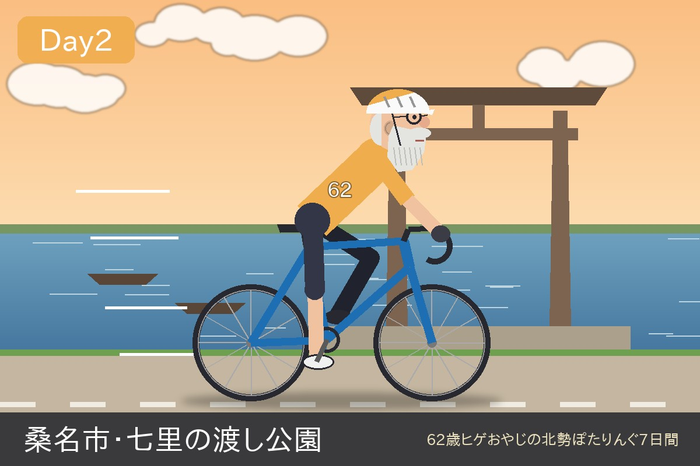

2日目も桑名から。九華公園のすぐ近く、東海道五十三次の宮宿と桑名宿を船で結んだ「七里の渡し」の跡を訪ねます。
七里の渡し跡には「伊勢国一の鳥居」と呼ばれる大鳥居が立っています。昔の旅人はここで船を降り、伊勢路への一歩を踏み出したそうです。自転車を止めて見上げると、背筋がしゃんと伸びます。
揖斐川沿いに整備された七里の渡し公園は、川面を眺めながら休憩するのにぴったり。周辺には古い町並みも残っているので、ゆっくり走って寄り道するのがおすすめです。
歴史のある場所を自転車で巡ると、車では見過ごす石碑や看板に気づけます。ゆっくり走る特権ですね。
それではまた明日。安全運転で、ゆっくり行きましょう。
―― 62歳ヒゲおやじ
#サイクリング #桑名市 #七里の渡し #東海道 #シニアライフ